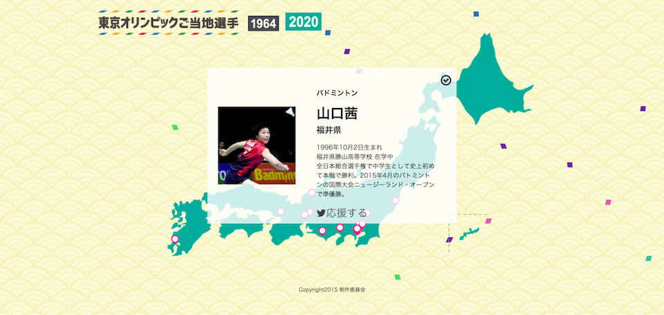
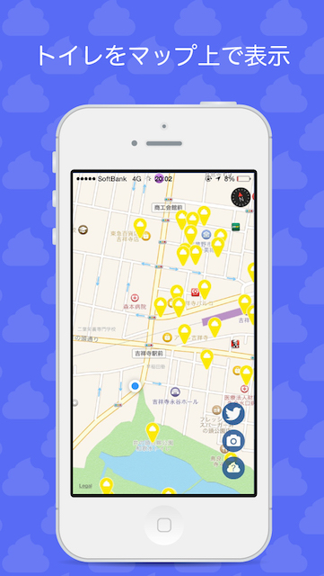
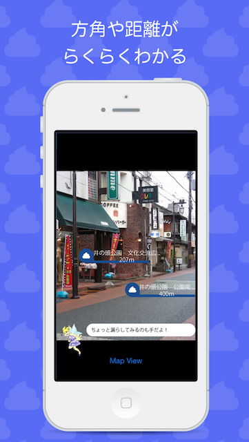
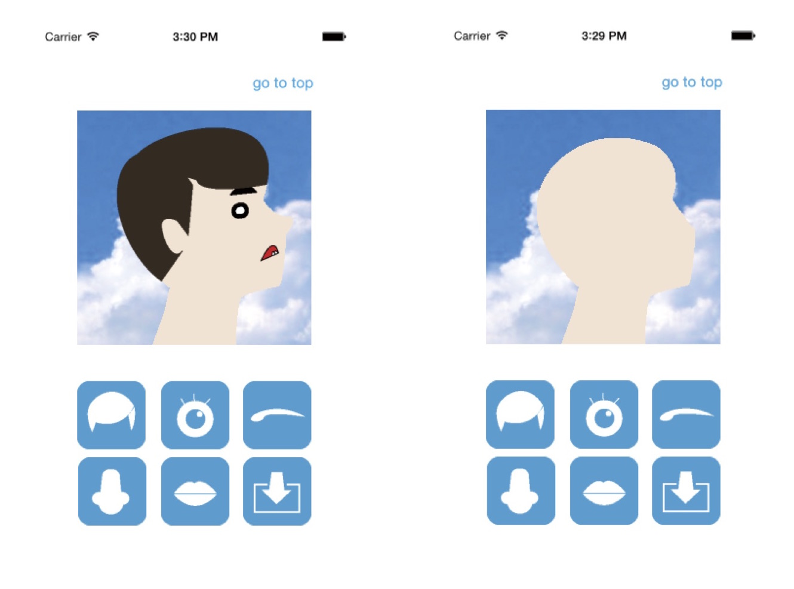

web
オリンピックご当地選手
2020年のオリンピックを今からもっと盛り上げるために選手をマッピングして地元の選手を応援するサイトをつくりました。コーディングは勉強するところから始めたので時間がかかりました。特に力をいれたのは1964年日本各地から東京に集まってきたイメージを伝えるために、2020のボタンを押したときに、線がでてきてその後ページ遷移するところです。サイト
2015.11 製作時間30時間/ コーディングリーダー /html css javascript j-querymoreSOS
東京のトイレの場所がマップでもARカメラでもわかるiOSアプリを作りました。トイレの妖精が煽ってくるところがポイントです。かなりライブラリに頼って開発しました。
2015.6-7 製作時間15時間/ iOSアプリの実装 デザイン /illustrator objective-c横顔似顔絵アプリ
時をかける少女をみて自分の横顔のイラストのアイコンをtwitterで設定して、友人から作って欲しい！と頼まれたことをきっかけに作りました。初めて作ったiOSのオリジナルアプリです。ライブラリ等使わずすべて自分で書きました。顔のそれぞれのパーツは10種類ずつ作りました。
2014.6 製作時間20時間/ /illustrator objective-c
logo
イニシャルロゴ
自分のイニシャルを使ってロゴを提案しました。左は化成会社のロゴを、右はhを椅子の形に見立て、インテリアショップのロゴを提案しました。注：印刷物だったのでweb上で色が変わっています
2014.11 製作期間1ヶ月/ / illustratorMy Dream project ロゴ
ガーナのボナイリ村でのNPO法人MY DREAMのロゴをデザインしました。その村の子供たちが夢を見つけ実現できる環境を作ることを目的としているNPOです。MY DREAMがそれへの架け橋になる、という意味と夢を虹に見立ててこのロゴを作りました。子どもたちに馴染みが出るようなものにしたく、テクスチャ感をだしました。初めてのデザインです。現在リデザイン中です。サイト
2013.3 製作期間1ヶ月/ /illustratorInstagramer News ロゴ
Instagrammer Newsというサービスのロゴをデザインしました。ターゲットは20−30代の女性で、媚びないデザインでなおかつ愛らしさをだすために、モチーフをフクロウにしました。色はインスタグラムの色から抽出しています。その後サービスの方針が変わりリデザインされています。サイト
2015.6 製作期間1ヶ月/ /illustratorCalmee ロゴ
banner
Life is tech! @金沢
ライフイズテックでのデザイナーインターンで制作したものです。英語のロゴと、金沢の文字を組み合わすのに苦戦しました。日本語をかっこよく操ることは課題です。
2015.6 製作時間2時間/ / illustratordribbble meetup
Goodpatchのdribbble meetupのイベントバナーをつくりました。ベルリンと東京を繋いでのイベントだったため、それぞれの街と、日本は夜でベルリンは朝、というのを伝えるようにしました。dribbbleでのわたしのfirst shotになりました。サイト
2015.10 製作時間5時間/ / sketch
DTP
フリーペーパーRE:
首都大学東京でMETRONAVI運営委員会というサークルに所属しています。その活動の中で首都大生のフリーペーパーをつくっていて、その編集長をしていました。仕事としては36ページの企画からDTPまでの総括で実際に渡しが手を動かして作ったのは表紙です。注：印刷物だったのでweb上で色が変わっています
左2014.12 右2015.6 / / illustrator PhotoshopBlue Project
グラフィックデザインの授業での課題です。15,000円の香水のパッケージ、という設定でデザインをしました。青を使うのが指定でした。写真を取るのが好きで、あじさい祭りで撮った写真を素材に香水の匂いが香ってくるような幻想的な雰囲気を意識してデザインしました。注：印刷物だったのでweb上で色が変わっています
2015.6 / / illustrator Photoshop
caractor
Life is Tech!吉本コラボキャンプ ロボット
Life is Tech×吉本のイベントがあって、吉本の芸人さんをメカ化する、ということでそのロボットを考えました。土台にしたのはSTARWARSのC3POです。
2015.6 製作時間3時間/ / illustratorLife is Tech!キャラクター とびすけ

Life is Tech!のマスコットキャラクターであひるのとびすけ、というのがいてそれをイラストにして起こしました。サマーウォーズに出てきそうなイメージで作りました。
2015.2 製作時間1時間/ / illustrator
other
Life is Tech!大阪校マップ
Life is Tech!吉本コラボキャンプ Tシャツ